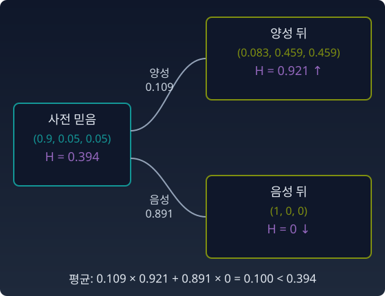

조건부 엔트로피: 관측이 지키는 평균의 약속
앞 절의 이야기에서는 검사 결과를 곱할 때마다 봉우리가 줄고 분포가 좁아졌다. 곱하면 언제나 좁아지는가?
반례 — 확신을 부정하는 검사
아니다. 거의 확신하던 믿음 (0.9, 0.05, 0.05)에 그 확신을 부정하는 검사 결과가 나왔다고 하자. 우도가 (0.01, 1, 1)이면 사후는 (0.083, 0.459, 0.459)다. 엔트로피는 0.394에서 0.921로 오히려 커진다. 확신이 무너지고, 다시 모르게 되었다.
그래도 「관측은 불확실성을 줄인다」는 말에는 정확한 형태가 있다. 결과를 보기 전에, 나올 수 있는 결과 전부에 대해 평균을 내면 줄어든다.
왼쪽 변, 곧 결과를 본 뒤의 엔트로피를 나올 수 있는 결과 전부에 대해 평균한 값을 조건부 엔트로피라 부른다. 정보이론에서는 가설을 X, 검사 결과를 Y로 두고 H(X|Y) ≤ H(X)라고 쓴다. 한 번의 관측은 확신을 무너뜨릴 수 있다. 그러나 평균적으로는, 검사를 한다고 더 모르게 되지는 않는다. 「곱셈은 확신의 기록이다」라는 말은 이 평균의 뜻으로 읽어야 한다.

위젯은 결과 하나의 갈래를 따라간다. 「반례」를 고르면 양성 쪽 갈래에서 엔트로피가 오르는 것을 볼 수 있다.
불러오는 중…
파이썬
import numpy as np
def H(p):
p = p[p > 0]
return -np.sum(p * np.log(p)) + 0.0 # -0.0 을 0.0 으로
def update(prior, lik): # 사전 × 우도, 정규화
u = prior * lik
return u / u.sum()
# 반례: 거의 확신하던 믿음에 그 확신을 부정하는 검사 결과
prior = np.array([0.9, 0.05, 0.05])
pos = np.array([0.01, 1.0, 1.0]) # 양성일 확률 P(양성 | 가설)
post = update(prior, pos)
print(f"사전 H {H(prior):.3f} → 양성 뒤 H {H(post):.3f} {np.round(post, 3)}")
# 결과를 보기 전의 평균: 양성·음성 두 경우를 확률로 가중
p_pos = np.sum(prior * pos)
post_neg = update(prior, 1 - pos)
print(f"P(양성) {p_pos:.3f} 음성 뒤 H {H(post_neg):.3f} 평균 H {p_pos * H(post) + (1 - p_pos) * H(post_neg):.3f}")
# 사전 H 0.394 → 양성 뒤 H 0.921 [0.083 0.459 0.459]
# P(양성) 0.109 음성 뒤 H 0.000 평균 H 0.100
양성이 나오면 엔트로피가 0.394에서 0.921로 커진다. 하지만 양성은 열 번에 한 번꼴로만 나오고, 음성이면 완전히 확신하게 된다. 평균 엔트로피는 0.100으로, 사전의 0.394보다 작다.
대응표
| 와일드카드 (OR) | 쉼표 (AND) |
|---|---|
| {A | B | C} | A, B, C |
| 혼합(mixture) | 곱(product) |
| 가능성을 넓힌다 | 가능성을 좁힌다 |
| 엔트로피가 성분 평균보다 크다 | 엔트로피가 평균적으로 준다 |
| 무지의 방향 | 확신의 방향 |
| 덧셈의 길 (m-측지선) | 곱셈의 길 (e-측지선) |
| 밀도를 더하는 직선 (기대모수 η 좌표에서 직선) | 로그 밀도를 더하는 직선 (자연모수 θ 좌표에서 직선) |
표의 마지막 두 줄을 숫자로 보자. 아침의 믿음 (0.4, 0.3, 0.3)과 MRI를 본 뒤의 믿음 (0.559, 0.021, 0.420)을 두 끝으로 두고 한가운데를 찾는다. 덧셈의 길(두 끝의 확률을 그대로 평균)에서 녹내장 확률은 0.160이고, 곱셈의 길(우도를 반만 반영)에서는 0.087이다. 같은 두 끝인데 중간이 다르다.
그리고 이것이 정보기하학의 심장이다
표본 공간에서 분포를 섞고 곱하는 두 연산이 파라미터 공간에서 두 접속(m-접속과 e-접속)으로 번역된다. 정보기하학이 밝힌 것의 핵심은 이 두 접속이 대등한 지위로 마주 서 있다는 것이다. 한쪽이 정해지면 다른 쪽이 정해지는 짝, 곧 쌍대다. 무지와 확신, 덧셈과 곱셈이 하나의 피셔 계량(곳마다 작은 걸음의 길이를 재는 규칙)을 사이에 두고 쌍대다. 계량이 둘인 것이 아니다. 자는 하나이고, 「곧음」의 규칙이 둘이다.
수확
「한 번의 관측은 확신을 무너뜨릴 수 있다. 그러나 나올 수 있는 결과 전부에 대해 평균하면 불확실성은 줄어든다. 무지(OR)와 확신(AND)은 쌍대다.」
문제 7. 가방을 뒤졌는데 열쇠가 없다
아침에 열쇠가 어디 있는지에 대한 믿음이 (가방 0.8, 책상 서랍 0.1, 외투 주머니 0.1)이다. 서두르느라 가방을 대충 뒤지면, 열쇠가 가방에 있어도 열 번에 한 번은 못 찾는다. (가) 가방을 뒤졌는데 못 찾았다. 믿음과 그 엔트로피(nat)는 어떻게 바뀌는가? (나) 가방을 뒤지기 전에, 결과(찾음 / 못 찾음)에 대해 평균한 엔트로피를 구해 처음 엔트로피와 견주어라.
함께 풀기

못 찾았으니까 가방은 지우고 서랍과 주머니가 반반이요. (0, 0.5, 0.5), 엔트로피는 0.693이에요. 처음 0.639보다 커졌네요.

열쇠가 가방에 있는데도 못 찾을 확률이 얼마였죠?

0.1이요. 아, 못 찾았다고 가방에 없는 게 아니네요. 「못 찾음」의 우도가 (0.1, 1, 1)이에요. 곱하면 0.08 : 0.1 : 0.1, 정규화하면 (0.286, 0.357, 0.357). 엔트로피는 1.093이고요. 가방이 1등에서 꼴찌로 내려갔어요.

결과 둘의 확률을 봐. 못 찾을 확률은 0.8 × 0.1 + 0.1 + 0.1 = 0.28, 찾을 확률은 0.72. 찾으면 열쇠가 손에 있으니까 엔트로피 0이고, 평균은 0.28 × 1.093 = 0.306. 처음 0.639보다 작아.
그래요. 못 찾은 날 아침에는 더 헷갈리게 되지만, 뒤지기 전에 평균을 내면 뒤져 보는 쪽이 덜 헷갈려요.
시험 전날 기출 한 회분을 풀었다가 오히려 더 불안해지는 날도 있지만, 평균적으로는 풀어 보는 게 낫다는 거랑 같네요.
문제 8. 완벽하지 않은 검사, 아무것도 알려 주지 않는 검사
세 가설에 대한 사전 믿음이 (0.9, 0.05, 0.05)다. 이번 검사는 양성일 확률이 가설별로 (0.01, 0.8, 0.8)이다. (가) 양성이 나왔을 때와 음성이 나왔을 때의 사후분포와 엔트로피를 각각 구하라. (나) 결과를 보기 전의 평균 엔트로피를 사전 엔트로피와 견주고, 그 차이를 구하라. (다) 양성일 확률이 가설과 상관없이 (0.3, 0.3, 0.3)인 검사라면 평균 엔트로피는 얼마인가? 「관측은 평균적으로 불확실성을 줄인다」의 「줄인다」는 정확히 어떤 부등호인가? (위 위젯의 「문제 8: 양성」「문제 8: 음성」으로 두 갈래를 불러올 수 있다.)
함께 풀기
반례랑 거의 같아서 금방 했어요. 양성이면 (0.101, 0.449, 0.449), 엔트로피 0.951. 음성이면 첫 가설 말고는 음성이 안 나오니까 (1, 0, 0), 엔트로피 0이요.
이번 검사는 둘째, 셋째 가설에서도 음성이 나올 수 있어. 0.2의 확률로.
아, 반례의 우도를 그대로 가져왔어요. 음성의 우도는 (0.99, 0.2, 0.2)네요. 사후는 (0.978, 0.011, 0.011), 엔트로피 0.121이에요. 위젯의 「문제 8: 음성」도 0.121이에요.
양성일 확률은 0.9 × 0.01 + 0.05 × 0.8 + 0.05 × 0.8 = 0.089. 평균은 0.089 × 0.951 + 0.911 × 0.121 = 0.195. 사전 0.394보다 0.200 작아.
(다)는 쉬워요. 관측은 평균적으로 줄인다고 했으니까, 이 검사도 조금은 줄일 거예요. 0.394보다 조금 작은 값이요.
계산해 봤어요?

…양성이면 우도가 (0.3, 0.3, 0.3)이라 곱하고 정규화하면 사전 그대로예요. 음성도 (0.7, 0.7, 0.7)이라 그대로고요. 평균도 0.394, 하나도 안 줄어요.
그럼 부등호는요?

≤예요. <가 아니라요. 검사 결과가 가설과 아무 상관이 없으면 등호가 서요. (나)에서 줄어든 0.200이 가설과 검사 결과 사이의 상호정보량(하나를 알면 다른 하나의 불확실성이 얼마나 줄어드는지 재는 양)이고, 상관이 없으면 그게 0인 거예요.
그래요. 「줄인다」는 「늘리지 않는다」로 읽어야 해요. 줄어드는 만큼이 그 검사가 가설에 대해 알려 주는 정보예요.
해석학에서 부등식을 배울 때마다 등호가 언제 서는지를 따로 물으셨는데, 여기서도 등호 조건이 이 부등식이 무엇을 재는지 알려 주네요.
문제 9. 결정 트리의 한 가지가 더 헷갈린다
결정 트리는 데이터를 질문 하나로 두 무리로 가르는 일을 되풀이하는 분류 모델이다. 한 마디(노드)에 사진 10장이 있다. 고양이 8장, 개 2장이다. 질문 「귀가 처졌는가?」로 가르니 왼쪽 가지에 3장(고양이 1, 개 2), 오른쪽 가지에 7장(고양이 7)이 갔다. (가) 가르기 전 마디와 두 가지의 라벨 엔트로피(bit)를 구하라. (나) 가지에 간 사진 수로 비중을 둔 평균 엔트로피를 구하고, 가르기 전과 견주어라. (다) 이 질문은 좋은 질문인가?
함께 풀기
왼쪽 가지의 엔트로피가 0.918 bit로, 가르기 전 0.722보다 커요. 질문을 했는데 더 헷갈리게 됐으니 나쁜 질문이에요.
오른쪽 가지는요?
일곱 장이 다 고양이라 0이요.
열쇠 문제랑 같은 꼴이야. 못 찾은 아침처럼 한 가지만 보면 더 헷갈리지만, 사진 한 장이 어느 가지로 갈지 모르는 채로 평균을 내야 해. 0.3 × 0.918 + 0.7 × 0 = 0.275. 가르기 전 0.722보다 0.446 줄었어.

사진 열 장 가운데 일곱 장은 질문 하나로 끝난 거네요. 남은 세 장은 헷갈리지만 다음 질문에서 또 가르면 되고요.
그래요. 결정 트리는 이 줄어든 양, 곧 가르기 전 엔트로피에서 가지들의 평균 엔트로피를 뺀 값을 「정보 이득」이라 부르고, 이 값이 가장 큰 질문을 골라 가지를 쳐요. 한 가지의 엔트로피가 오르는 건 흔한 일이에요.
오답 노트를 유형별로 나눴더니 한 유형에 헷갈리는 문제가 몰려서 오히려 막막했는데, 나머지 유형은 다 정리됐던 거랑 같네요.